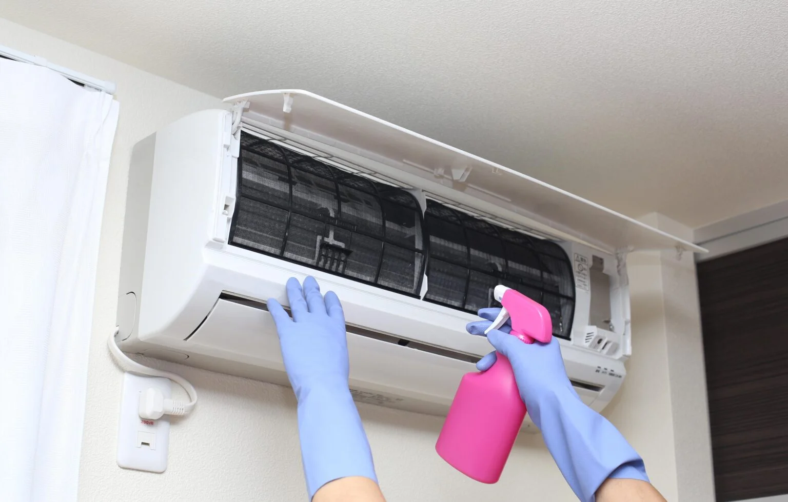

افضل شركة تنظيف مكيفات سبليت بالرياض وبسعر لا يقبل المنافسه 0541145506

يعد تكييف الهواء جزءًا أساسيًا من الحياة اليومية في الرياض، حيث تلعب مكيفات سبليت دورًا حيويًا في توفير الراحة والهواء البارد، خاصة في فصل الصيف الحار. ولكن مع مرور الوقت، تتراكم الأوساخ والغبار داخل وحدات التكييف، مما يقلل من كفاءتها ويزيد من استهلاك الطاقة. هنا تأتي أهمية شركة نقل الرياض التي تقدم خدمات تنظيف مكيفات سبليت بالرياض لضمان عملها بكفاءة عالية وتحسين جودة الهواء في منزلك أو مكتبك. يمكنكم التواصل مع الشركة عبر الواتساب أو الاتصال على الرقم المخصص لخدمة العملاء 0541145506 او عبر الواتساب بالضغط هنا .
أهمية تنظيف مكيفات سبليت بالرياض بشكل دوري
إهمال تنظيف المكيفات يؤدي إلى مشاكل عديدة، مثل ضعف التبريد وزيادة فواتير الكهرباء، بل وقد يسبب أمراض الجهاز التنفسي بسبب انتشار العفن والبكتيريا. عند الاستعانة بخبراء شركة نقل الرياض، فإنك تضمن تنظيفًا احترافيًا يساهم في:
- تحسين كفاءة المكيف وتقليل استهلاك الطاقة.
- إطالة عمر الوحدة الداخلية والخارجية.
- التخلص من الروائح الكريهة والبكتيريا والعفن.
- توفير هواء نقي خالٍ من الأتربة والملوثات.
مراحل تنظيف مكيفات سبليت بالرياض
تعتمد شركة نقل الرياض على تقنيات متقدمة وأدوات متخصصة لضمان تنظيف شامل لمكيفات سبليت بالرياض، وتشمل مراحل العمل ما يلي:
- فحص شامل للوحدة الداخلية والخارجية لتحديد مدى تراكم الأوساخ وتقييم حالة المكيف.
- تنظيف الفلاتر الهوائية باستخدام أدوات متطورة لإزالة الأتربة والبكتيريا.
- غسل الملفات الداخلية والخارجية بمحاليل تنظيف متخصصة لضمان إزالة الرواسب.
- تنظيف فتحات التصريف لمنع تراكم المياه الراكدة داخل الوحدة.
- فحص أداء المكيف بعد التنظيف للتأكد من عودته للعمل بكفاءة قصوى.
لماذا تختار شركة نقل الرياض لتنظيف مكيفات سبليت بالرياض؟
تتميز شركة نقل الرياض بعدة مزايا تجعلها الخيار الأول لعملاء الرياض:
- فريق متخصص ومؤهل بخبرة واسعة في تنظيف وصيانة مكيفات سبليت.
- استخدام أحدث الأجهزة والمعدات التي تضمن إزالة الأوساخ بأعلى كفاءة.
- أسعار تنافسية وخدمات عالية الجودة تناسب جميع الفئات.
- خدمة سريعة ومرنة مع إمكانية الحجز الفوري عبر الهاتف أو الموقع الإلكتروني.
- ضمان رضا العملاء من خلال متابعة ما بعد الخدمة.
تأثير تراكم الأتربة على أداء مكيفات سبليت بالرياض
مع مرور الوقت، تتراكم الأتربة والشوائب داخل مكيفات السبليت، مما يؤدي إلى انسداد الفلاتر والمراوح الداخلية. هذا الانسداد يتسبب في تقليل تدفق الهواء، مما يجعل المكيف يعمل بجهد أكبر ليصل إلى درجة الحرارة المطلوبة. نتيجة لذلك، يزداد استهلاك الكهرباء، وتنخفض كفاءة التبريد، وقد يؤدي ذلك إلى أعطال متكررة. لهذا السبب، توفر شركة نقل الرياض خدمات تنظيف مكيفات سبليت بالرياض لضمان إزالة جميع العوالق والأوساخ، مما يساعد في تحسين أداء الجهاز وإطالة عمره التشغيلي.
كيف تعرف أن مكيفك بحاجة إلى تنظيف؟
هناك عدة علامات تدل على أن مكيف السبليت الخاص بك بحاجة إلى تنظيف فوري، منها:
- ضعف تدفق الهواء، مما يجعل التبريد أقل كفاءة.
- زيادة استهلاك الكهرباء دون تغيير في الإعدادات.
- صدور روائح كريهة عند تشغيل المكيف، مما يشير إلى تراكم العفن.
- سماع أصوات غير طبيعية أثناء تشغيل الجهاز.
- تسرب المياه من الوحدة الداخلية بسبب انسداد فتحات التصريف.
أفضل المواد المستخدمة في تنظيف مكيفات سبليت بالرياض
تعتمد شركة نقل الرياض على مواد تنظيف عالية الجودة لإزالة الأتربة والعفن والبكتيريا من مكيفات السبليت. يتم استخدام منظفات متخصصة لا تؤثر على المكونات الداخلية للجهاز، إلى جانب أجهزة ضغط الهواء لتنظيف الفلاتر والمراوح بعمق. كما يتم استخدام محاليل مضادة للبكتيريا لمنع انتشار الروائح الكريهة، مما يساعد في تحسين جودة الهواء داخل المكان.
دور الصيانة الدورية في الحفاظ على كفاءة مكيفات سبليت بالرياض
إلى جانب تنظيف المكيفات، تلعب الصيانة الدورية دورًا مهمًا في الحفاظ على أداء مكيفات السبليت. تشمل الصيانة فحص مستوى غاز الفريون، التأكد من سلامة التوصيلات الكهربائية، وتنظيف فتحات التصريف لمنع تسرب المياه. توفر شركة نقل الرياض خدمات صيانة شاملة إلى جانب تنظيف مكيفات سبليت بالرياض، مما يساعد في اكتشاف أي مشكلات مبكرًا وإصلاحها قبل أن تتفاقم.
متى يجب تنظيف مكيفات سبليت بالرياض؟
من الضروري جدولة تنظيف المكيفات بشكل دوري، ويفضل القيام بذلك:
- مرتين سنويًا على الأقل، خصوصًا قبل فصل الصيف.
- عند ملاحظة ضعف التبريد أو تسرب المياه.
- عند انتشار روائح غير محببة أو أصوات غير طبيعية.
- إذا كنت تعاني من حساسية أو مشاكل تنفسية بسبب الأتربة المتراكمة.
نصائح للحفاظ على نظافة مكيفات سبليت بعد التنظيف
بعد تنظيف المكيفات بواسطة شركة نقل الرياض، يُنصح باتباع بعض الخطوات للحفاظ على كفاءة التكييف:
- تنظيف الفلاتر بانتظام كل أسبوعين.
- التأكد من عدم انسداد فتحات التهوية.
- ضبط درجة الحرارة على 24-26 درجة مئوية لتقليل استهلاك الطاقة.
- التأكد من أن الوحدة الخارجية غير معرضة للعوائق أو الأوساخ.
الفرق بين تنظيف وصيانة مكيفات سبليت
على الرغم من أن تنظيف المكيفات يساعد في إزالة الأتربة وتحسين جودة الهواء، فإن الصيانة الدورية تشمل فحص شامل للمكيف، بما في ذلك التوصيلات الكهربائية، مستوى غاز الفريون، وأداء الضاغط. توفر شركة نقل الرياض كلتا الخدمتين لضمان تشغيل المكيفات بكفاءة عالية ودون مشاكل.
كيف يؤثر التنظيف الاحترافي على كفاءة المكيف؟
يضمن التنظيف الاحترافي لمكيفات سبليت إزالة الرواسب العنيدة، مما يحسن تدفق الهواء ويقلل من الضغط على المروحة والضاغط. هذا يؤدي إلى تقليل استهلاك الكهرباء وإطالة عمر المكيف، مما يوفر لك بيئة مريحة وتكاليف تشغيل أقل.
خدمات أخرى تقدمها شركة نقل الرياض بالرياض
بالإضافة إلى تنظيف مكيفات سبليت بالرياض، توفر شركة نقل الرياض مجموعة من الخدمات الأخرى، مثل:
- صيانة وإصلاح مكيفات الهواء بجميع أنواعها.
- تركيب المكيفات بأنواعها المختلفة.
- شحن الفريون وفحص تسريبات الغاز.
- تنظيف مجاري الهواء لضمان نقاء الهواء الداخل إلى المنزل.
كيفية طلب خدمة تنظيف مكيفات سبليت بالرياض من شركة نقل الرياض؟
يمكنك حجز خدمة تنظيف مكيفاتك بسهولة عبر شركة نقل الرياض باتباع الخطوات التالية:
- الاتصال بنا عبر الرقم المخصص لخدمة العملاء 0541145506.
- تحديد موعد مناسب وفق جدولك الزمني.
- وصول الفريق المختص في الوقت المحدد لتنفيذ الخدمة بكفاءة.
- الاستمتاع بمكيف نظيف وعمل بكفاءة عالية.
الخاتمة
إذا كنت تبحث عن خدمة تنظيف مكيفات سبليت بالرياض بأفضل جودة وأسعار تنافسية، فإن شركة نقل الرياض هي خيارك الأمثل. بفضل فريقنا المحترف وأدواتنا المتطورة، نضمن لك بيئة صحية وهواء نقي داخل منزلك أو مكتبك. لا تتردد في التواصل معنا الآن لحجز خدمتك والاستمتاع بتكييف هواء نظيف وعالي الأداء!